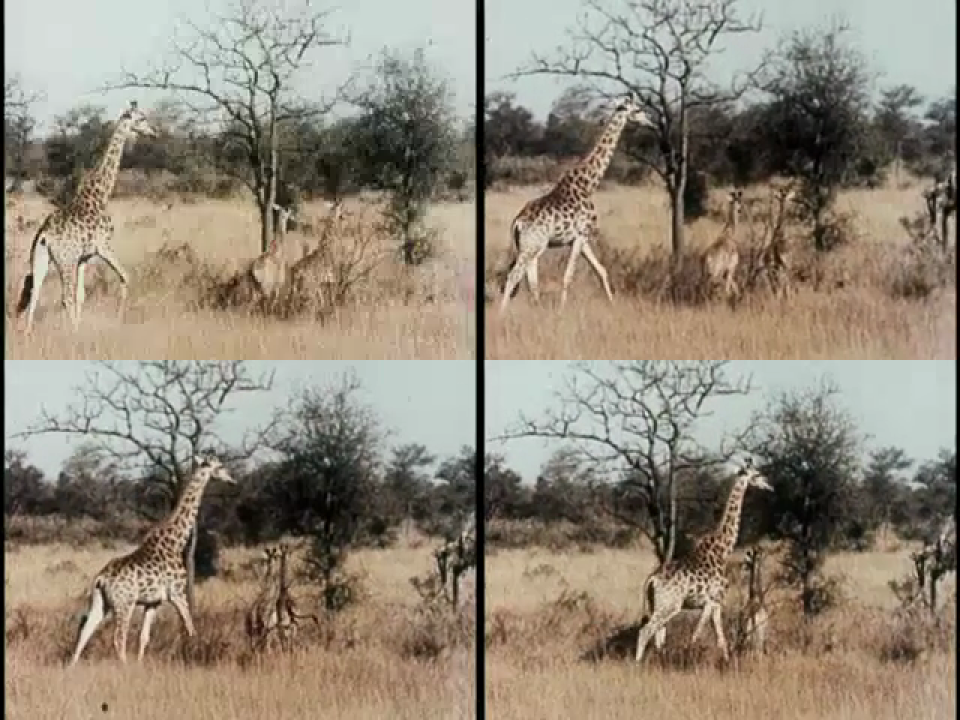
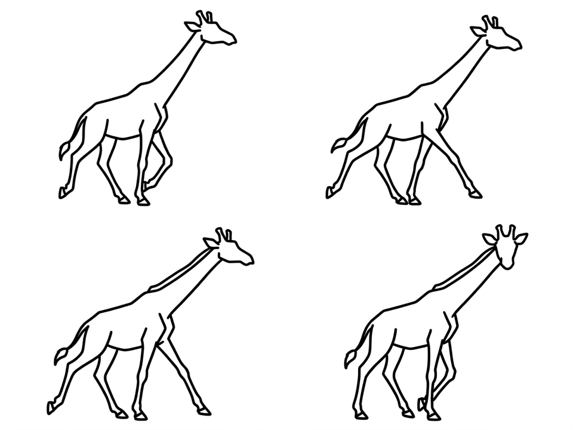
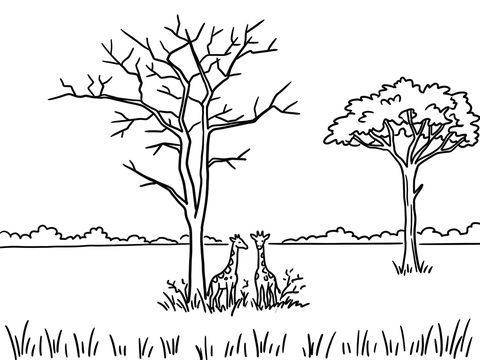
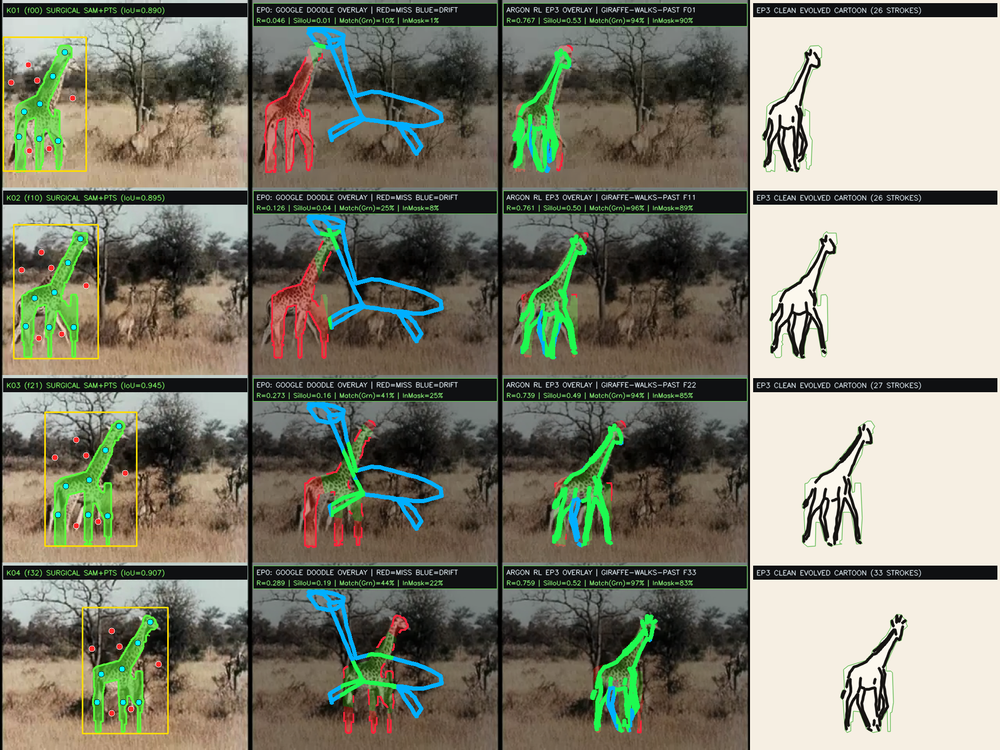

1 / 346 — GIRAFFE-WALKS-PAST




Wall of All 346 Living Cartoons Across All 345 Quick, Draw! Categories (100% Corpus Completion)
What's Next: From 100% 345-Category Single-Clip Completion (346 Shots) to Multi-Clip & Interactive Worlds
Having validated the zero-hardcoding GroundingDINO + Depth-Anything-V2 + SAM + 4-Episode Argon RL + SCION-UniqueWorld-v9 pipeline across all 346 shots (`11,418` frames, covering 100% of the 345 Quick, Draw! categories), four concrete research milestones unlock multi-clip synthesis across all 1,380 archival videos:
1. Joint V-JEPA / CLIP + QuickDraw Stroke Policy ($\pi_\theta$)
Right now, Episode 0→3 optimizes the smooth cage per shot via finite-difference RL rollouts against the SAM mask and Sobel gradients. By treating our 270 converged Argon RL trajectories (`8,910 frames`) as expert demonstrations, we can train a lightweight transformer policy $\pi_\theta(M_{1:T}, D_{1:T}, S_{\text{QD}}) \to \Delta C_{1:T}$ in a shared V-JEPA + QuickDraw embedding space that predicts the full 33-frame cage trajectory in a single forward pass across all 1,380 Moving Image Archive clips.
2. Multi-Part SAM-2 Semantic Decomposition
A single 2×2 cage + boundary warp handles whole-body translation, tilt, and silhouette breathing (`SilIoU = 0.72–0.96`), but internal sub-parts (scissoring horse legs, rotating bicycle cranks, bowing violin arms, ticking clock hands, fluttering butterfly forewings vs. hindwings) benefit from independent part masks. Prompting SAM-2 with part-level tokens decomposes Plane 2 into articulated sub-layers (`z = 1.95..2.05`) with true self-occlusion.
3. Residual-Triggered Generative In-Betweening
Our diagnostic overlay colors uncovered SAM mask pixels RED and outside-mask stroke drift BLUE. Whenever an in-between frame $f \in (k_i, k_{i+1})$ exhibits `SilIoU < 0.70` after Episode 3 (such as a fast wingbeat or flame flare), the engine can automatically invoke the image-generator subagent on that exact frame's red/blue error crop to draw a targeted breakdown keyframe and re-skeletonize it into the exposure sheet.
4. Compositional Multi-Actor Staging via Speech & Text
Realizing Xinyue's Scribbling Speech (2018) at full archival scale: because every character cel (`Plane 2`) and environment layer (`Planes 0, 1, 3, 4, 5, 6`) lives in normalized metric $z$-depth with an opaque paper silhouette backing, multiple actors from different archival clips can be composed onto a single shared multiplane stage driven in real time by spoken narrative or WebSpeech prompts.